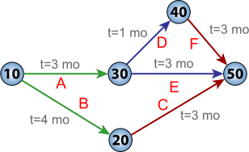

class: center, middle, main-title # Software Engineering Management Introduction to Project Management --- ## Today - Management basics -- - Five management functions -- - Role of manager -- - Project management -- - Main activities -- - Estimation -- - Managing risks -- - Controlling --- ## Software engineering management > Software engineering management can be defined as the **application of > management activities**—planning, coordinating, measuring, monitoring, > controlling, and reporting—**to ensure** that software products and > software engineering services **are delivered** efficiently, effectively, > and to the benefit of stakeholders. > <br>-- <cite>SWEBOK 3.0</cite> --- ## Management in general > Management is what **managers** do during their working hours. > <br>-- <cite>Leonard Holmes, The Dominance of Management: A Participatory Critique</cite> --- ## Management in general > Management involves the **activities** undertaken by one or more persons > for the purpose of **planning and controlling the activities of others** > in order **to achieve objectives** that could not be achieved by the others acting alone. > <br>-- <cite>Richard H. Thayer</cite> --- ## Five management functions 1. Planning -- 1. Organizing -- 1. Staffing -- 1. Leading -- 1. Controlling --- ### Planning - Defining goals and objectives -- - And how they will be acomplished -- - And documenting it! -- Notice -- - Always about future -- - Future is uncertain -- - **Selecting best alternative out of many available** -- - One of the most important functions -- - Especially so for software engineers --- ### Organizing - Defining organizational structure -- - Assigning roles and responsibilities -- - Allocating resources -- Notice -- - Required when two or more people are involved (i.e. always) --- ### Staffing - Hiring and training people -- - Building teams -- Notice -- - People are the main asset -- - A manager primarily works with people -- - Main challenge - putting the right people in the right seats -- - Optimizing return from all employees to benefit the entire enterprise --- ### Leading - Motivating, communicating, guiding and aligning people -- - Helping solve problems -- - Creating an environment that facilitates both -- Notice -- - Main challenge - achieving effectiveness and unity of action --- ### Controlling - Are we on track? -- - Same as driving with GPS -- - Are we effective? -- - Same as with [wheels](https://cromhallchapel.files.wordpress.com/2015/07/dontreinventthemap-6ba62b8ba05d4957d2ed772584d7e4cd.png) -- - Why not? -- - How do we get better? -- Notice -- - Makes no sense without planning -- - Accountability requires monitoring --- ## Universality of management - Notice how all of the before is generic -- - Management is fundamentally the same -- - in all types of organizations -- - in all departments -- - at all organizational levels --- ## Manager - A person who is primarily responsible for the five management functions -- - Planning / Organizing / Staffing / Leading / Controlling -- - For example -- - Sales manager -- - Engineering manager -- - Team manager -- - Project manager --- ## Management in SE context - Work is typically done in projects -- - Despite alternative ideas like [#noprojects](https://www.infoq.com/minibooks/noprojects-value-culture/) -- - Software projects are complicated to manage -- - Software engineers benefit from management skills -- Therefore, let's take a deeper look at **Software Project Management**. --- ## Project > A project is a **temporary** endeavor undertaken to create a **unique** product, service or result. > <br>--<cite>PMBOK</cite> -- A project always has: - a measurable one-time goal - a defined start and end time --- ## Initiating a project - There is an idea (goal) and a sponsor -- - And likely a project manager -- - A *project charter* is created -- - Fasibility is evaluated -- - Project is signed off for execution --- ### Initiating: Project charter A document of a few pages that typically describes: -- - Goals or deliverables -- - Organizational and reporting structure -- - Main milestones -- - Stakeholders -- - Allocated resources (budget, people, assets) -- - Constraints -- - Alternatives considered --- ## Planning a project - Select (and tailor) SDLC model -- - Determine and define deliverables -- - Estimate effort, schedule and cost -- - Allocate people and other resources -- - Identify risks -- - Identify quality requirements -- - Set up monitoring, controlling and reporting --- ## Recap: Triple constraint  --- ## Why plan? - It is *impossible* to measure the rate of progress except with reference to a plan. -- - May require access to parts of project plan: - Higher management - Customers - Subcontractors - Suppliers - Investors - Banks --- ## Estimation - How much work is it and when can it be finished? -- - It's a difficult question -- - Almost no fixed price bids in the industry -- - One of primary reasons why projects fail --- ### Estimation: Size - T-Shirt sizes -- - Man-months -- - Story points -- - Function points -- - Lines of code --- ### Estimation: Improving accuracy - Delay estimation -- - Base estimates on other similar projects -- - Divide and conquer (decomposition) -- - Compare with empirical models - COCOMO: `E = a + b(S)^c` -- - Use optimistic, most likely and pessimistic estimation - PERT: `(O + 4M + P)/6` --- ### Estimation: WBS  --- ### Estimation: Gannt chart  --- ### Estimation: Critical path  ??? Example: car manufacturing plant where engine takes most of the time --- ## Risk > Risk is characterized by the probability of an event that will result in a negative > impact plus a characterization of the negative impact on a project. > <br>--<cite>SWEBOK 3.0</cite> --- ### Risk: A few examples - Estimates are inaccurate -- - Scope creep inflates scope -- - Conflicting stakeholder interests -- - Resource turnover -- - Legacy components lack docummentation -- - Training isn't available -- - Exchange rate variabilities --- ## Risk Management > Risk management entails **identification** of risk factors and analysis of the **probability** > and potential **impact** of each risk factor, **prioritization** of risk factors, and > development of risk **mitigation strategies** to reduce the probability and minimize the > negative impact if a risk factor becomes a problem. > <br>--<cite>SWEBOK 3.0</cite> --- ## Assessing risk Qualitative - e.g. scale of `Negligible / Important / Catastrophic` -- Quantitative - `Risk exposure = Probability * Cost` --- ## Assessing risk: Example - **Risk:** Following end-user testing, user guide may need to be improved -- - **Probability:** 40% -- - **Loss size:** 5 man-days -- - **Risk exposure:** 2 man-days (= 5 * 0.4) --- ## Project monitoring - Data is the foundation of intelligent decision-making -- - Software engineers do not produce anything physical -- - Lack of visibility makes it difficult to monitor and control software projects -- - Software projects must produce *additional* artifacts that are visible, e.g.: -- - Design documents/prototypes -- - Change logs -- - Reports -- - Project/status meetings -- - Client surveys (e.g. satisfaction level) --- ## Project control - Monitoring provides basis for making decisions -- - Adherence to plans should be assessed: - At predetermined intervals - Continuously -- - Goal is to keep plans aligned with reality -- - This can mean: - Taking corrective actions - Modifying plans --- ## Project control The smaller the deviation, the easier it is to correct. -- > Adding human resources to a late software project makes it later. <br>-- <cite>Brook's law</cite> --- ## Key takeaways - Management is about enabling groups of people to achieve a shared goal -- - Management is universal -- - What goes into initiating, planning and controlling project execution -- - Understanding of estimation and risk management --- class: middle, center # Questions? --- ## Next time - Software Requirements